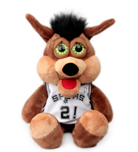

文化内容 队名由来： 1967年建队时，球队大本营在达拉斯，队名为“达拉斯灌木丛队”，命名由来是当股东们决定组建球队的时候，他们正在一家名为灌木丛俱乐部的高级会所吃晚饭。1970年，为了争取整个德州的认同感，球队更名为“德克萨斯灌木丛队”，但并没有起到太大作用，于是一年后球队又改回了原名。 1973年移师圣安东尼奥后，经过公开投票选择“马刺”作为新队名。牛仔文化是德州文化的重要组成部分，“马刺”则是牛仔靴后跟上连着的一种用来刺激马快跑的带刺的轮状装备。在中世纪欧洲的文学作品里，马刺被视为骑士精神的象征，卑劣的人不配使用马刺。 更衣室格言： “当一切都看起来无济于事的时候，我去看一个石匠敲石头。他一连敲了100次，石头仍然纹丝不动。但他敲第101次的时候，石头裂为两半。可我知道，让石头裂开的不是那最后一击，而是前面的一百次敲击的结果。”——雅各布·里斯 吉祥物： 小野狼从1983年起作为马刺的吉祥物出现在球迷面前。根据官方记录，小野狼1991-92赛季在表演时成功穿越一个圆环扣篮，这使它被载入史册，成为NBA历史上首个表演这一才艺的吉祥物。小野狼这么多年来很少缺席过比赛，平均每个赛季要出席500场见面会。因为出色的表现和对观众的亲和力，小野狼在2007年入选了NBA吉祥物名人堂。2013-14赛季，小野狼当选为最佳吉祥物。 |